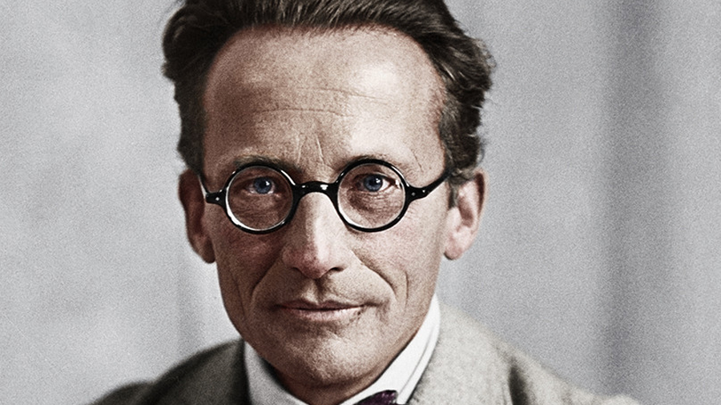
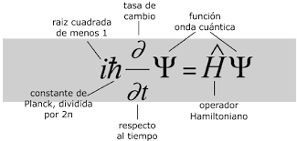

Erwin Schrödinger (1887-1961) fue un físico teórico austríaco, conocido por su desarrollo de la ecuación de Schrödinger y su contribución a la mecánica cuántica. Su experimento mental del "gato de Schrödinger" es ampliamente reconocido en la filosofía de la ciencia.

Schrödinger ganó el Premio Nobel de Física en 1933 por su trabajo en la ecuación de onda. A lo largo de su carrera, realizó importantes contribuciones en diversos campos, incluyendo la biología teórica.